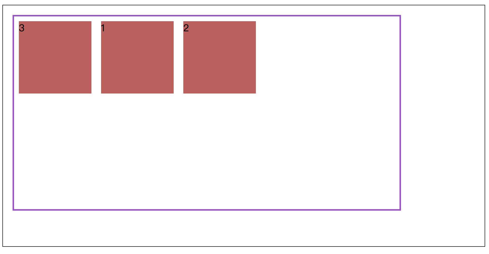

1. Введение в Flexbox
Модуль макета Flexbox (Flexible Box) призван обеспечить более эффективный способ формулирования, настройки и распространения макета элементов в контейнере, даже если их размер неизвестен или является динамическим. Простое понимание состоит в том, что он может автоматически корректировать, рассчитывать размер элемента в пространстве контейнера и выполнять эффективную и разумную компоновку.
В макете Flexbox есть две важные концепции:Контейнер Flex и проект Flex。
Контейнер Flex содержит несколько элементов Flex.Установив конкретные свойства контейнера Flex и элементов Flex, можно получить различные стили гибкого макета.
Использование Flexbox
Использование Flexbox очень просто, нужно только настроить контейнер Flexdisplay:flexилиdisplay:inline-flex, Вы можете использовать макет Flexbox для конкретных операций.
Ниже приведен конкретный пример для демонстрации:
HTML-код
<div class="container">
<div class="wrap">
<div></div>
<div></div>
<div></div>
</div>
</div>
код CSS
.container {
width: 70%;
height: 500px;
margin:20px auto;
border: 1px solid black;
}
.container .wrap {
display: flex;
border: 3px solid #a448cf;
margin:20px;
width:80%;
height:80%
}
.container .wrap div {
width:150px;
height:150px;
background-color: #c75a5a;
margin:10px;
}
Два, Flex контейнер
Сначала представьте конкретные свойства контейнера Flex и способы его использования.
|
Атрибуты |
стоимость |
смысл |
|
flex-direction |
row || column || row-reverse || column-reverse |
Управление направлением расположения элементов Flex вдоль главной оси (Main Axis) |
|
flex-wrap |
wrap || nowrap || wrap-reverse |
Управление отображением элементов Flex в новых строках |
|
flex-flow |
обтекание строки || обтекание строки || обтекание столбца || обтекание столбца и т. д. |
Сочетание свойств flex-direction и flex-wrap |
|
justify-content |
flex-start || flex-end || center || space-between || space-around |
Управление выравниванием элементов Flex на главной оси |
|
align-items |
flex-start || flex-end || center || stretch || baseline |
Управляйте проектом Flex вCross-Axisцентровка |
|
align-content |
flex-start || flex-end || center || stretch |
Используется для многострочного контейнера Flex, управляйте проектом Flex вCross-Axisцентровка |
1. flex-direction
flex-directionСвойства управляют направлением расположения элементов Flex вдоль главной оси (главной оси), которая может быть строкой (горизонтальной), столбцом (вертикальной) или обратной строкой и столбцом.
по умолчаниюflex-directionЗначение атрибутаrow, Конкретное расположение выглядит следующим образом:
Но когдаflex-directionЗначение атрибутаcolumn, Соответствующая главная ось должна быть вертикально вниз.
Конкретные примеры применения следующие:
2. flex-wrap
flex-wrapСвойство контролирует, переносится ли элемент Flex. По умолчанию контейнер Flex будет содержать все элементы Flex в одну строку, посколькуflex-wrapЗначение по умолчанию свойстваnowrapТо есть не оборачивать.
Конкретные примеры применения следующие:
гдеwrap-reverseУказывает, что элементы Flex расположены в контейнере в несколько рядов, но направление обратное.
3. flex-flow
flex-flowдаflex-directionс участиемflex-wrapСокращенные атрибуты двух атрибутов.
Больше никаких объяснений, просто посмотрите на следующий пример:
4. justify-content
justify-contentСвойства, которые управляют выравниванием элементов Flex по всей главной оси.
justify-contentЗначением атрибута по умолчанию являетсяflex-start。

space-betweenВыровняйте гибкие элементы на обоих концах.
space-aroundПусть каждый элемент flex имеет одинаковое пространство
5. align-items
align-itemsУправляйте проектом Flex вCross-AxisВыравнивание.
align-itemsЗначением по умолчанию являетсяstretch, Так что высота всех элементов Flex равна высоте контейнера Flex, распределенной.
baselineПусть все гибкие элементы выровнены вдоль своей собственной базовой линии на поперечной оси.
среди нихstretchс участиемbaselineОн будет работать, как указано выше, без установки определенного значения высоты, в противном случае будет отображаться фиксированная высота.
align-contentСвойства иalign-itemsЭффект тот же, но этот атрибут только для нескольких строк и недопустим для одной строки.
Три, проект Flex
Далее продолжите знакомство с конкретными свойствами и использованием проекта Flex.
|
Атрибуты |
стоимость |
смысл |
|
order |
Стоимость |
в соответствии сorderЗначения переупорядочены. Снизу вверх |
|
flex-grow |
0 || positive number |
Управляйте расширением проекта Flex в контейнере с дополнительным пространством |
|
flex-shrink |
0 || positive number |
Как сжать проект Flex в контейнере без дополнительного места |
|
flex-basis |
auto || % || em || rem || px |
Укажите начальный размер проекта Flex |
|
align-self |
auto || flex-start || flex-end || center || baseline || stretch |
Управлять одним проектом Flex вCross-Axisцентровка |
1. order
orderРазрешить изменение порядка элементов Flex в контейнере Flex. Значение по умолчанию для этого свойства равно 0.
в соответствии сorderРазмер значения сортируется, а значение сортируется от низкого до высокого.
По умолчанию сортировка выглядит следующим образом:
Когда установлен блок 1order:1После этого порядок выглядит следующим образом:
Если несколько проектов Flex имеют одинаковыеorderЗначение, изменение порядка проекта Flex основано на положении исходного файла HTML.
Как показано ниже, установите квадрат 1 и квадрат 2 вorder:1。

2. гибкий рост и гибкий
flex-growс участиемflex-shrinkСвойства управляют тем, как проект Flex увеличивается (расширяется), когда в контейнере есть дополнительное пространство, и как сжиматься, когда свободного пространства нет.
flex-growс участиемflex-shrink Значение может быть 0 или любое положительное число больше 0.
по умолчанию,flex-growЗначение атрибута установлено в0Это означает, что проект Flex не будет расти и заполнять доступное пространство контейнера Flex.
по умолчанию,flex-shrinkЗначение свойства установлено в 1, что означает, что проект Flex будет уменьшен до ширины экрана.
Если вы положитеflex-growУстановлено на1,Следующим образом:
Когда несколько flex-элементов находятся в одной строке, то есть не переносятся, задайте разныеflex-growс участиемflex-shrink Значение, соответствующее выделению пространства, также отличается.
flex-grow
Добавьте все параметры увеличения для каждого элемента, чтобы получить доступное пространство, а затем разделите на общее значение увеличения, чтобы получить пространство для выделения единиц.
Рассчитайте в соответствии с настройкой увеличения каждого элемента.Если увеличение элемента равно 6, то размер элемента на главной оси должен быть увеличен на 6 * размер пространства выделения единиц.
flex-shrink
Во-первых, следуйте всем пунктамflex-shrink * item-size Суммируйте, чтобы получить взвешенную сумму, а затем рассчитайте коэффициент сжатия каждого элемента: коэффициент сжатия = flex-shrink * item-size / предыдущая сумма. Наконец, вычтите это из каждого элементакоэффициент усадки * отрицательное свободное пространство。
В проекте flex естьmin-width(height)с участиемmax-width(height)В то же время соответствующие пункты должны учитывать верхний и нижний пределы и распределять оставшиеся значения расширения и сжатия для других элементов.
3. flex-basis
flex-basisУказывает начальный размер гибкого элемента в направлении главной оси, который определяет ширину или высоту содержимого гибкого элемента (в зависимости от направления главной оси).
По умолчанию начальная ширина элемента Flex определяетсяflex-basisОпределяется значением по умолчанию, а именно:flex-basis: auto, Ширина элемента Flex рассчитывается автоматически на основе содержимого.
flex-basisс участиемwidth/heightСуществует определенный приоритет, конкретные правила заключаются в следующем:
4. align-self
align-self Управляйте выравниванием отдельных предметов по поперечной оси.
ПомимоautoКроме того, гибкий контейнер в приведенном выше примере установленalign-itmes：center。
auto Установить значение целевого элемента flex в качестве родительского элементаalign-itemsЗначение или, если у элемента нет родительского элемента, установите значениеstretch, В приведенном выше примереalign-items：stretch。
4. Резюме
Выше приведено общее введение в flexbox, которое демонстрирует его мощь и гибкость. Кроме того, у flexbox есть много других функций и проблем, поэтому я не буду их здесь описывать. Рекомендуется прочитать следующие две статьи, которые хорошо написаны. Эта статья также в основном относится к этим двум статьям.
Понимание Flexbox: все, что вам нужно знать
Глубокое понимание гибкого макета и расчета
Если вы хотите попрактиковаться в мастерстве flexbox, вы можете попробовать поступить в Baidu Front-end Technology InstituteЭто назначение。
�